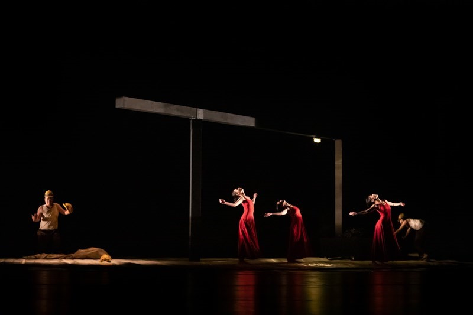

河床引領觀眾,探詢所知甚少的那段過往,團團緊縮的記憶被拉伸,在每個觀 者心中褶皺成不同形貌。地掀起來,包裹住人,凌亂糾結成一團廢棄衛生紙似的動 態物體,這些提煉後的記憶被包裹成像寄予觀者。
舞台上兩面牆將人困於夾道,而又展開旋轉,兩面牆各有一爿是灰壁,一爿似 是尋常家景。向上攀爬,翻越,攀得越高,彷彿就能翻回另爿,與家人留下的那盞 昏黃暖燈重逢。然而迴圈如生死循環的輪迴,轉速越來越快,多數人被甩入一地幽 黯。試圖向上,卻在與命運較勁中落得下風;墜落,服膺於社會結構、資本力量, 抑或親人飯飽衣足的笑靨,直至肉體死滅。
在虛擬空間應用為趨勢的現在,實際存在的形體仍有其不可取代的視覺效果。 河床劇團用舞台機關升降、分隔等轉換,營造使觀眾沉浸於該時空的幻覺,以符號 與象徵表現抽象化視覺,舞台作為打散線性時空的場域,回應了時間與歷史的複雜 性,如此的過去並非已然結束的過去,而作為生動的缺席持續存在,透過時代錯誤 (anachronism)的存在為人所知。
而演出、事件與觀眾間的關係在這樣的場域裡各自天然成為抑或被預設扮演 什麼角色?超現實的意象在演出者、觀眾的傳輸與接收間,演出本身已是一種對過 往的詮釋,或謂某種歷史記憶的轉譯,以美的設計,揭露傷悲、重喚殘酷,觀眾清 楚知曉演出主軸,而他們各自入場的原因撲朔迷離,入院觀戲的群體,自願直面前 人作下的殘酷?期望認知過往被遺忘的?想感受超現實主義美學?作為空間的舞 台獨立於當下與過去之外,有趣的是,若將此劇解釋為促進歷史記憶的文化平權, 揭露大歷史之下有意或無意被忽視的一個小群體,某種層面而言,這些礦工為維生 所需的金錢而使生命受危,而出入劇場的觀眾,共同以票券支拄著部分的舞台,由 人力物力財力構成如此磅礡巨製;被紀念的人受到資本的壓迫,而紀念、復現他們 過往的場域亦由資本堆垛而出。
是時眾生(聲)已然無聲(生),赤、白、灰、黑畫面輪轉,雙唇在一呼一吸間歙 動,色彩強烈地打入眼中,話語顯得蒼白,多層面的結構壓迫著被看者,舞台張力 壓迫著觀看者。作為觀者,隨著表演的推進,愈發感受到宿命般別無選擇的窒息感, 避無可避。礦工為生存而不由自主,觀者的記憶空間有多大的自由?場景中許多人 從分層階梯的上層躍下,舞台空間運用巧妙再次顯現之餘,表演者乾脆俐落地躍下, 彷彿是種解脫,割離與現實的聯繫。霎時想起王鼎鈞的散文〈碎琉璃〉:「時代像篩 子,篩得每一個人流離失所,篩得少數人出類拔萃。」〈被遺忘的〉以礦工作為呈 現主體,而礦工絕非該時空背景下唯一受苦受難的群體,時代縮影般地樣貌復現, 個體各有其生命史,劇場打散時空創造記憶空間的同時,這些個人生命經驗亦被揉 雜紛呈於虛實難分的演出中。

因於猶太大屠殺紀念碑之影響,推移拋接的白柱於我眼中如一塊塊長長的墓 碑,想像或許湊近一瞧能看見刻在其上的受難者姓名。碑本應穩重屹立,它們卻搖 搖晃晃地難以立足,為之付諸心血的這片土地,彷若不容亡者徹夜安眠。
不要遺忘,縱然意象不具封閉性可供個人自由詮解,然而將記憶物質化,是否 是另一種套牢與禁錮?入劇場者僅是公眾群體中很小一撮人,演出結束贈予印上 「我會記得」的徽章,能如何為這段過往在集體記憶中尋找安身立命的落腳點?若 將記憶建檔歸類,〈被遺忘的〉對觀者而言屬於何種?
提及群體創傷記憶,猶太大屠殺時常納入命題,祖輩所受的苦難,成為部分當 代美國猶太人的一種身分認同。相較之下,〈被遺忘的〉或許不會構成某種普遍認 同,而作為整體社會的部分折射,以小見大地非正面回應時代風貌。
記憶的漣漪一圈圈向外發散,如紅衣舞者穿梭於一雙雙手的環繞間,像開場時 礦車輾下的圓,若礦工於圈中的匍匐攀緣,似紅衣迴旋直至幕黯,艷紅的血已然乾 枯,心的餘漾漪漪不止。舞台中諸多關於圓的元素運用,並不能為故事帶來圓滿。 正面直視攤開的傷痛,記得了,然後呢?個人記憶是不斷變動的整體,昔日記憶從 舞台被釋放,新鮮的過往於當下壓折。導演郭文泰所謂能記 20 年的劇場體驗,我 們或許要問,時間帶來的一切可能讓其中增添、曲折了什麼,又失落、重構了什麼。
這一齣為亡者所作、復現存在的安魂曲終,走出劇院,生者餘悸連連。
